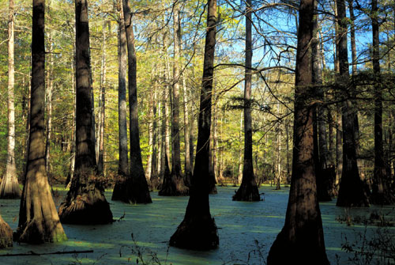

National Parks – America's Natural Legacy
Big Thicket National Preserve

The Preserve consists of nine land units and six water corridors encompassing more than 105,684 acres. Big Thicket was the first Preserve in the National Park System established October 11, 1974, and protects an area of rich biological diversity. A convergence of ecosystems occurred here during the last Ice Age. It brought together, in one geographical location, the eastern hardwood forests, the Gulf coastal plains, and the midwest prairies.